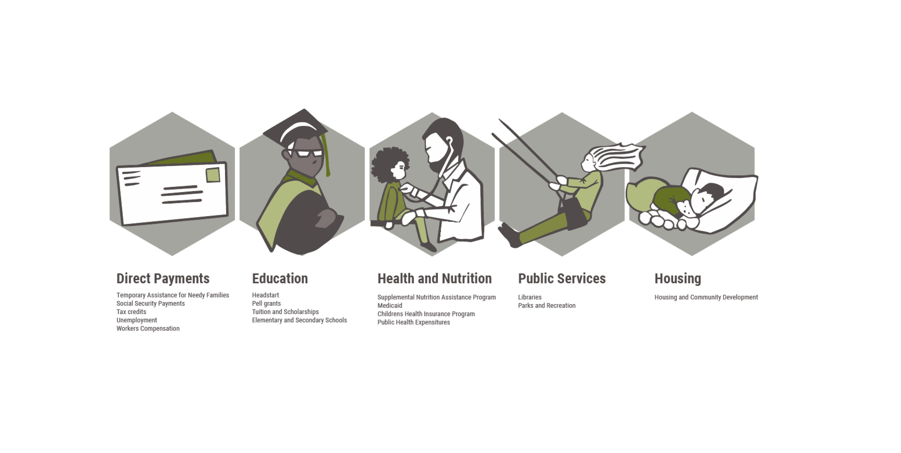

“Our state’s historic case before the United States Supreme Court was the catalyst for overturning Roe v. Wade and has made the nation safer for children than it was just a few short hours ago." -- Mississippi Governor
Carrying an unwanted pregnancy quadruples the odds that a woman and her child will live below the federal poverty line, according to The Turnaway Study, a University of California San Francisco research project that tracked women who got access to abortions versus those who’d been denied them over a 10-year period. It triples the chances of the woman being unemployed.
Child poverty rates are higher in states that restrict abortion access.
The red cluster represents pro-life states that spend less on children,*and?* yet have higher poverty rates.
While the blue cluster represents pro-choice states that spend more on children with lower poverty rates
The District of Columbia looks to be an outlier, spending the most per child at almost $64k
States that limit abortion access spend 20% less on children than pro-choice states.
Where does state spending for families go? How states spend their budgets also differs. For our evaluation we broke the data into 5 buckets.

There is a 26% decrease in spending on education in pro-life states.
Pro-life states spend 23% less on financial payments to families than pro-choice states
Pro-life states spend on average, 16% less than pro-choice states on health and nutrition services.
Pro-life states spend on average, $200 less than pro-choice states on public resources such as libraries and parks.
Housing is by far the category with the biggest difference, with pro-life states spending 61% less than pro-choice states .
The Institute for Women’s Policy Research developed a comprehensive reproductive rights index score weighted across eight key indicators. These include factors such as public insurance coverage, high quality sex education in schools, and access to infertility treatments. What is the relationship between the reproductive rights score of the state and financial support of chidlren and families?
What to say about this
Several Pro-life states have banned abortion or significantly weakened abortion access.
These same pro-life states have the weakest maternal and child health outcomes, and they spend significantly less money than pro-choice states taking care of families
As access to reproductive rights fall, so does state financial support for families and chidren.
Scroll to see how state rankings match up against all spending categories. Darker colored indicate higher ranks. States are ordered by reproductive rights scores.
"One upside of Dobbs is that it makes possible broad coalitions of people of goodwill who, despite their disagreement on the fundamental question of abortion, agree that we must all work to provide for the needs of mothers, children and families in crisis."
So, what can you do next?
- Share this story with others
- Get involved. Support planned parenthood
- Advocate for changes to your state budget